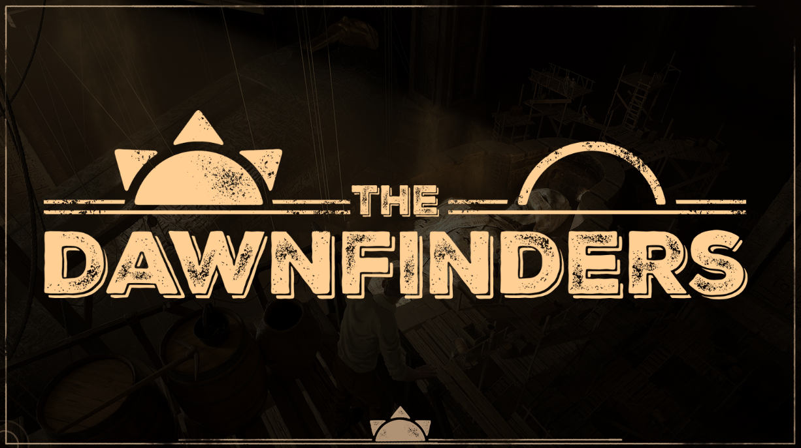
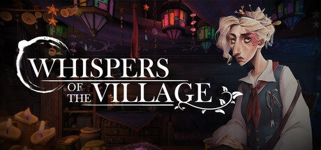
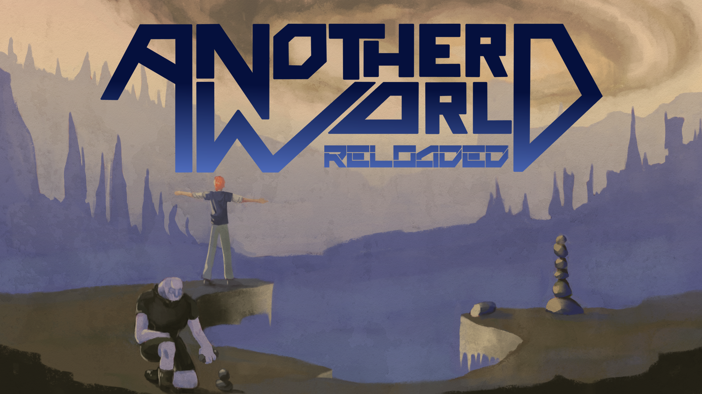

The Dawnfinders
Dungeon Crawler d'extraction PvE coopératif. Architecture réseau multijoueur via Subsystem C++, interactions répliquées, composant de déplacement physique custom et suite d'outillage dédié (Launcher / Deployer).
Développeur C++ / Gameplay & Engine – Recherche de Stage

Dungeon Crawler d'extraction PvE coopératif. Architecture réseau multijoueur via Subsystem C++, interactions répliquées, composant de déplacement physique custom et suite d'outillage dédié (Launcher / Deployer).

Jeu d'ambiance et de narration interactive. Implémentation des mécaniques de gameplay interactives, gestion de la logique narrative et publication sur Steam.

Réinterprétation 3D du chef-d'œuvre d'Éric Chahi. Reproduction des systèmes de gameplay originaux réadaptés dans un environnement 3D moderne.